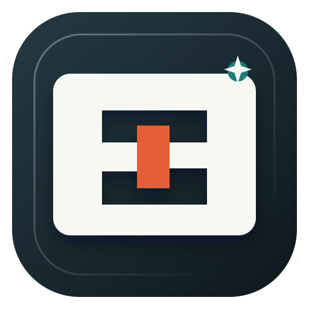
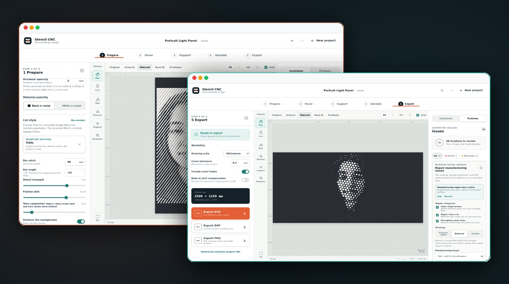
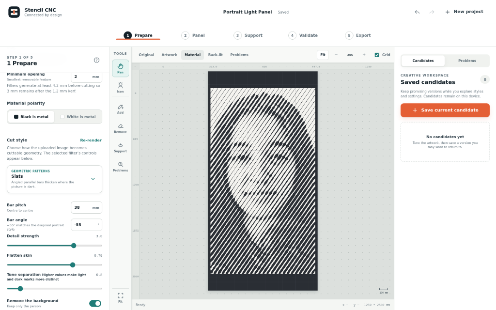
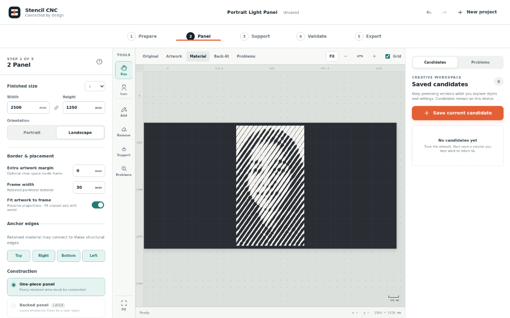
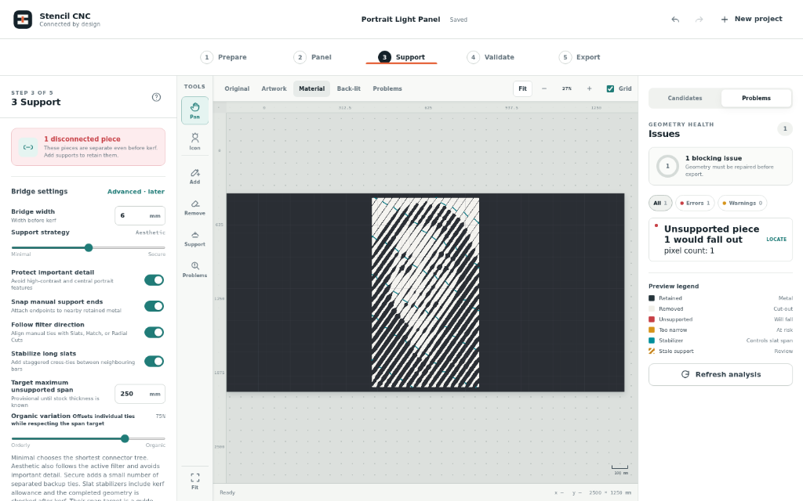
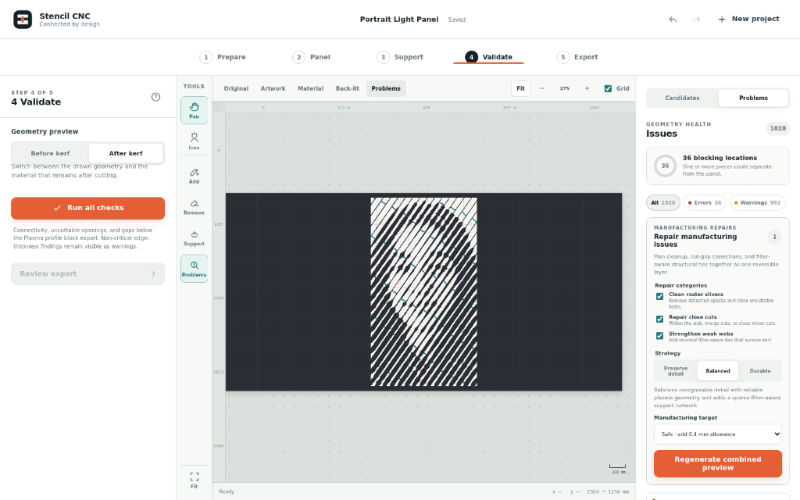
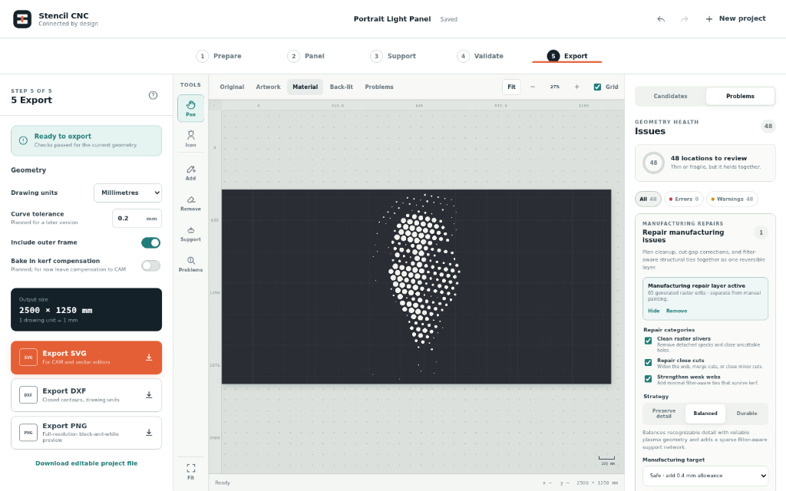

Stencil CNC

About The Project
Connected by design: From photographs to cuttable, structural sheet metal panels.
Stencil CNC turns photographs and prepared artwork into connected, manufacturing-aware geometry for CNC plasma, laser, and waterjet cutting. It integrates creative graphic image treatments with panel sizing, automatic structural support design, physical kerf validation, manual touch-ups, and CAM-ready exports into a unified, installable Progressive Web App.
The foundational law of CNC stencils is simple: dark geometry represents retained metal, and light geometry represents material to remove. In plasma and laser cutting, disconnected islands fall through the cutting table, and delicate bridges burn away. Stencil CNC isolates the creative source treatment, structural frame, support bridges, manual brush edits, and automated manufacturing repairs into distinct non-destructive layers so the final panel can be consistently rebuilt, checked, and exported without altering original artwork.
The 5-Step Workflow
- 1️⃣ Prepare: Import photographs or vector artwork, select from 13 cut styles (including Slats, Hatch, Variable Dots, Contour Bands, and Stencil Portraits), and adjust bar pitch, angles, detail strength, and background isolation.
- 2️⃣ Panel: Configure sheet metal stock dimensions (default 1250 × 2500 mm), portrait or landscape orientation, perimeter frame widths, anchor edges, and construction modes (one-piece structural panels vs. backed decorative panels).
- 3️⃣ Support: Automatically inspect topological connectivity, identify floating islands that would fall out, and generate smart, filter-aligned bridges or organic slat stabilizers with custom span limits.
- 4️⃣ Validate: Simulate real cutting kerf (e.g. 1.2 mm torch width). Locate unsevered dropouts, tight cuts, and fragile webs. Preview reversible manufacturing repair layers before making changes.
- 5️⃣ Export: Download verified closed-contour DXF files calibrated for CAM software, clean SVG vector files, full-resolution preview PNGs, or portable Stencil project files.
Features
- 🎨 13 Parametric Cut Styles: Line art, Poster stencil, Icon stencil, Graphic portrait, Silhouette, Negative-space linework, Woodcut, Contour bands, Slats, Hatch, Radial cuts, Variable dots, and Ornamental symmetry.
- 🌉 Filter-Aware Smart Bridges: Automatically generates ties that align with active cut patterns (slats, hatch, radial cuts) while protecting critical facial landmarks from unsightly interruptions.
- 🔥 Kerf Simulation & Physical Validation: Previews post-kerf physical geometry to guarantee that finished features preserve minimum web strength and that narrow slots don't weld shut during cutting.
- 🛠️ Automated Reversible Repairs: Cleans isolated raster slivers, widens close cuts, and strengthens weak webs with a single click without permanently altering the underlying artistic filters.
- ✏️ Interactive Editing Brushes: Real-time manual Add/Remove metal tools, straight lines, connected-region fill, and single-gesture undo for artisan precision.
- 💾 Local-First & Device-Gated: Creative candidates and projects stay securely in browser IndexedDB. Protected by invite-based device onboarding with zero credentials exposed in client code.
Architecture & Tech Stack
Client PWA & Geometry Core
Vanilla JavaScript (ES Modules), deterministic client-side 2D topology and mask processing engine, responsive HTML5 canvas preview, and IndexedDB storage.
Analysis Microservice
Isolated Python 3 / FastAPI service utilizing OpenCV and MediaPipe for advanced portrait analysis, depth filtering, and photographic cut pattern synthesis.
Gateway & Deployment
Node.js / Express security gateway handling invite-token authentication, rootless Podman Quadlet containers on private networks, and Caddy reverse proxy.
Gallery




